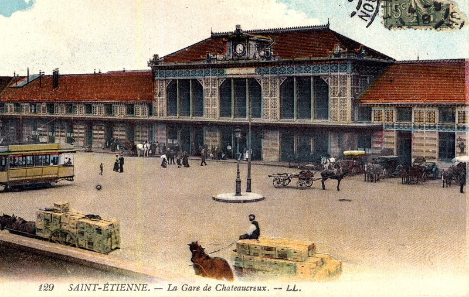

La Cité du Design a d'abord comme mission de sensibiliser tous les publics au design. Elle s'inscrit dans un projet de reconversion et de développement économique d'un territoire de tradition industrielle et associe un établissement d'enseignement supérieur artistique à un équipement consacré au design. La Cité du design est également un membre fondateur du réseau Codesign, organisation unique en France à ce jour, qui réunit les actions de design en région Rhône-Alpes.
Et la réponse de la question précédente est :
a) L’armature du bâtiment est posée sur des vérins hydrauliques.
La gare a été édifiée sur 300 vérins pour contrôler les mouvements du sol, très instable à cause des galeries minières, et rehausser la gare lors des affaissements. Elle a, par exemple, connu un affaissement de 27 cm à la suite d’un bombardement en 1944.

Une nouvelle question pour la route,
Les tramways de la STAS, ou Société de transport de l’agglomération stéphanoise, parcourent chaque semaine l’équivalent :
a) de la distance Lille-Marseille, soit 1 000 km.
b) de la distance Paris-New York, soit 6 000 km.
c) du tour de la Terre, soit 40 000 km.
Votre prochaine étape est un lieu administratif important de la ville de Saint-Etienne
information itinéraire